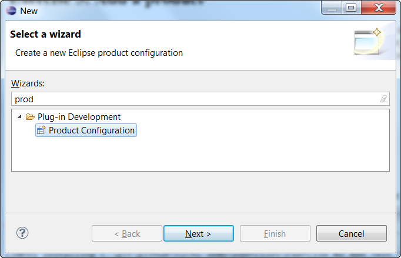
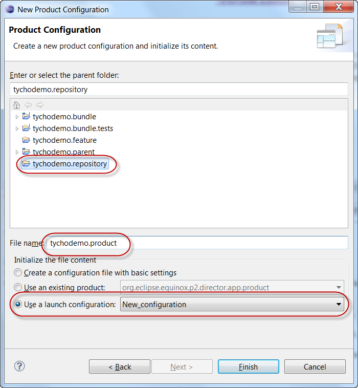
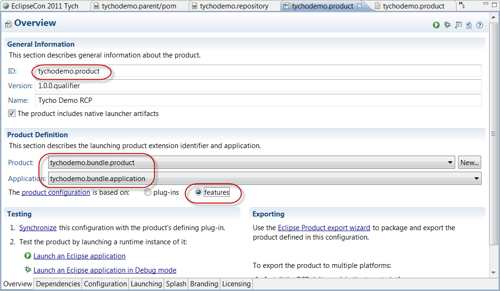
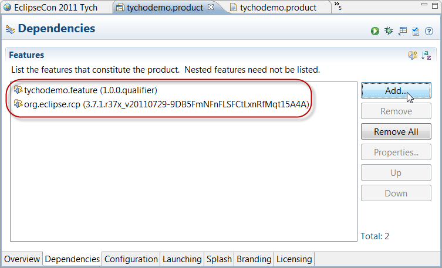
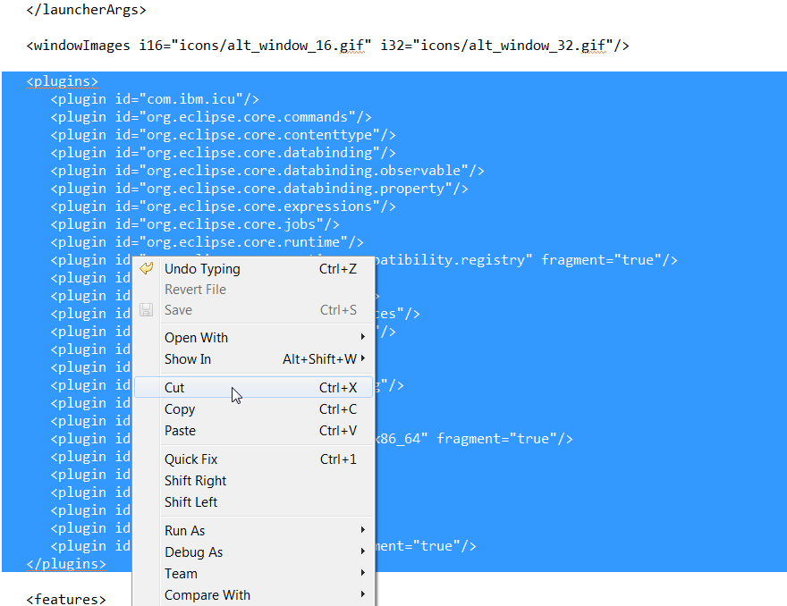
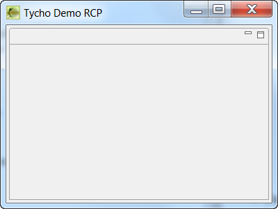

- File > New > Other > Plug-in Development > Product Configuration
 - File name: "tychodemo.product"
- Choose "Use a launch configuration" and select the launch configuration from Exercise 1.
Note: this will make sure the bundle start levels of the product are configured correctly. Otherwise the built product will fail to start. The start levels in the .product file in this example should be:<configurations> <plugin id="org.eclipse.core.runtime" autoStart="true" startLevel="0" /> <plugin id="org.eclipse.equinox.common" autoStart="true" startLevel="2" /> <plugin id="org.eclipse.osgi" autoStart="true" startLevel="-1" /> </configurations>
 - In the "Overview" tab:
- enter product ID "tychodemo.product"
- "The product configuration is based on": select "features"
- Under "Product:", select "tychodemo.bundle.product"
- Under "Application:", select "tychodemo.bundle.application"
 - In the "Dependencies" tab:
-
- add feature "tychodemo.feature" :
<feature id="tychodemo.feature" version="1.0.0.qualifier"/>- add feature "org.eclipse.rcp" :<feature id="org.eclipse.rcp"/>
 - CAVEAT: due to a bug you have to make sure that there is no <plugins> section in your feature-based product.
Right-click tychodemo.product > Open with > Text editor Delete the <plugins> section if found.

Even if the build succeeds, look out for messages like this in your build log:

- Note the product is being built as part of the existing packaging type "eclipse-repository". This is not intuitive and there will be a dedicated packaging type for p2-updatable eclipse products in a later version of tycho.
Expected result: SUCCESSFUL build.
In tychodemo.repository/target/repository, we have published the product metadata. E.g. you should now find the zipped eclipse launcher binaries in tychodemo.repository/target/repository/binary/

Add the following snippet to tychodemo.repository/pom.xml:
<build>
<plugins>
<plugin>
<groupId>org.eclipse.tycho</groupId>
<artifactId>tycho-p2-director-plugin</artifactId>
<version>${tycho-version}</version>
<executions>
<execution>
<!-- (optional) install the product for all configured os/ws/arch environments using p2 director -->
<id>materialize-products</id>
<goals>
<goal>materialize-products</goal>
</goals>
</execution>
</executions>
</plugin>
</plugins>
</build>
Expected result: After successful build, you should find an installed product under tychodemo.repository/target/products/tychodemo.product/<os>/<ws>/<arch>/

Expected result: The "Tycho Demo RCP" screen should show up.
